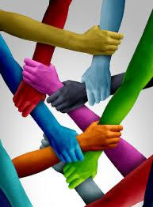
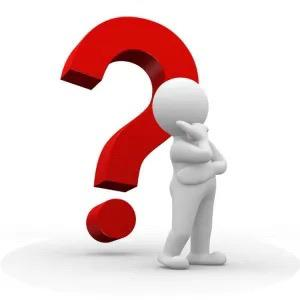

L'Obiettivo 10
L'Obiettivo 10 (SDG 10) dell'Agenda 2030, intitolato "Ridurre le disuguaglianze all'interno di e fra le Nazioni", mira a diminuire le disparità di reddito, genere, età, disabilità, etnia e status. Punto cardine è il motto "non lasciare indietro nessuno", promuovendo l'inclusione sociale, economica e politica, nonché politiche migratorie sicure.

Le Ragioni che Contano
🕊️ Riduce i conflitti
Forti disparità di reddito e opportunità alimentano tensioni sociali, criminalità e instabilità politica.
🗳️ Promuove la democrazia
Quando tutti hanno voce in capitolo, le istituzioni sono più forti e trasparenti.
🌱 Sblocca il potenziale
Garantire pari opportunità permette a milioni di persone di contribuire all'economia con il proprio talento.
📈 Migliora il mercato
Una distribuzione del reddito più equa aumenta il potere d'acquisto e rende l'economia più resiliente.
